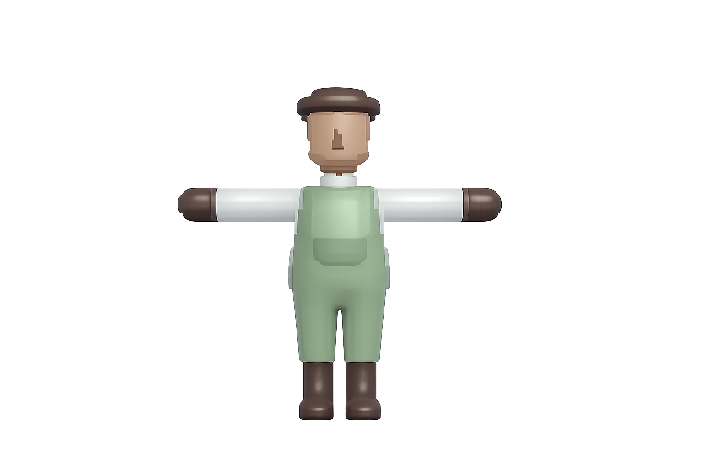

Een overzicht van de core mechanics in Untitled Goose

Ik heb de Farmer Walk gemaakt met waypoints in de scene. De farmer beweegt automatisch tussen verschillende punten in het level. Hierdoor kan ik makkelijk bepalen welke route hij volgt en hoe snel hij beweegt. Tijdens het lopen wordt de walk-animatie afgespeeld. Bij bepaalde waypoints voert de farmer ook acties uit, zoals planten of oogsten. Deze acties worden geactiveerd op basis van zijn locatie, waardoor de farmer automatisch de juiste taak uitvoert.